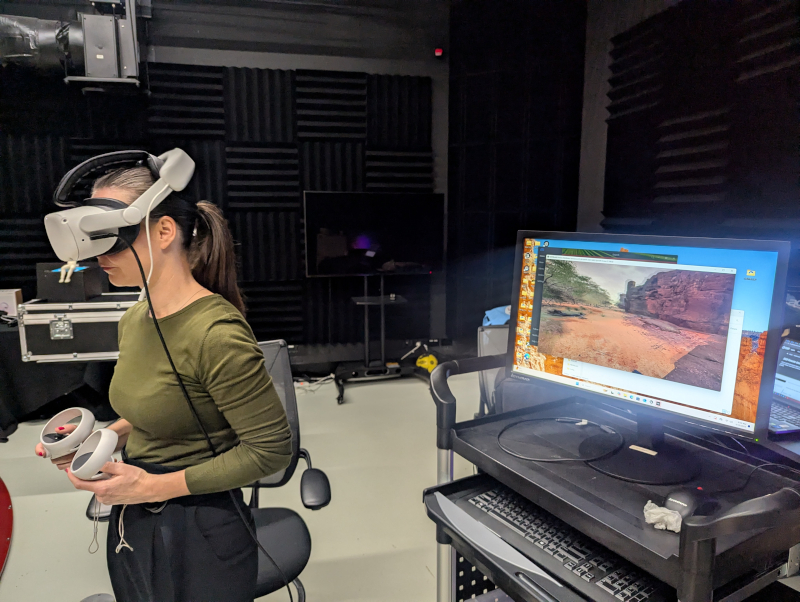
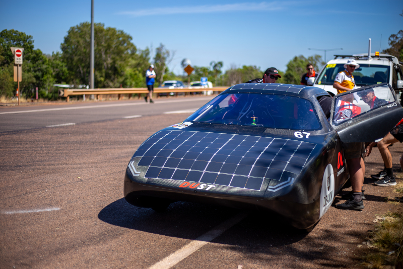
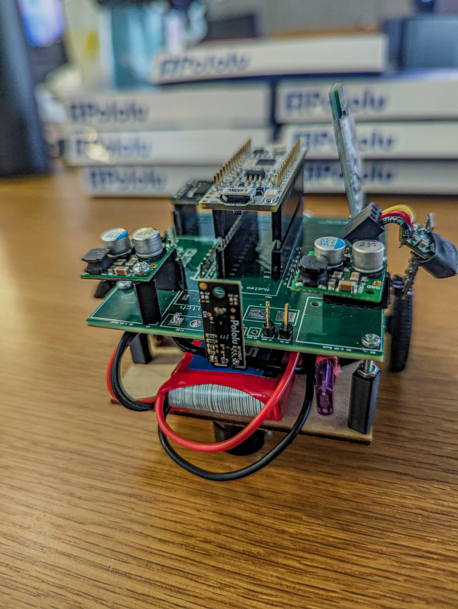
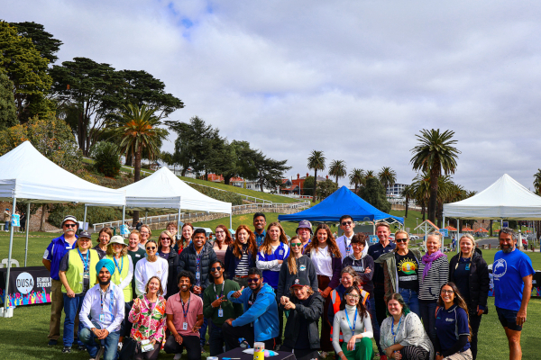
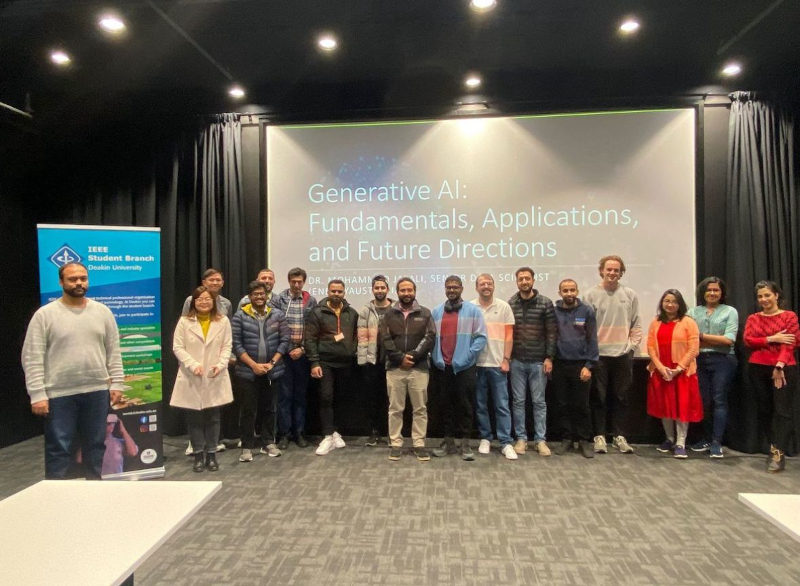
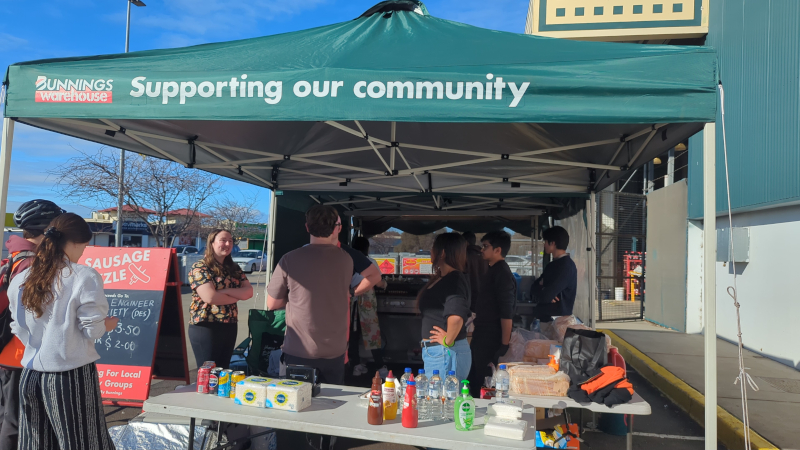

Engineer, tinkerer and recovering solar-car racer.
This is where my projects get the space a resume can't give them. Happy browsing!






/Fix/ I won’t pretend the start was smooth. I’d done the first half of my degree on a transfer program back in Sri Lanka, but COVID meant nearly all of it was online — a strange way to prepare for something as hands-on as mechatronics. So when I landed in Australia to finish at Deakin, the physical, build-it-yourself reality of the work caught me off guard, and so did everything else: the food, a new city, public transport that ran to its own rhythm. What got me through in the end wasn’t my grades — it was people. The community in Geelong and the clubs around uni were what made the place start to feel like home, and once I had that footing I threw myself in.
The thing I’m proudest of grew straight out of that. The World Solar Challenge has a team build a solar car from the ground up and race it 3,000 km from Darwin to Adelaide. Friends of mine took it on in 2023 and I let it pass, still finding my feet at the time — so when it came round again I didn’t make that mistake twice. Over the next year I ran our weekly meetings, built the team’s sponsorship documents from scratch, got stuck into carbon fibre and electrical work, liaised with Bridgestone, handled logistics, and picked up a camera as the team’s second photographer when we finally raced in 2025. /Fix/